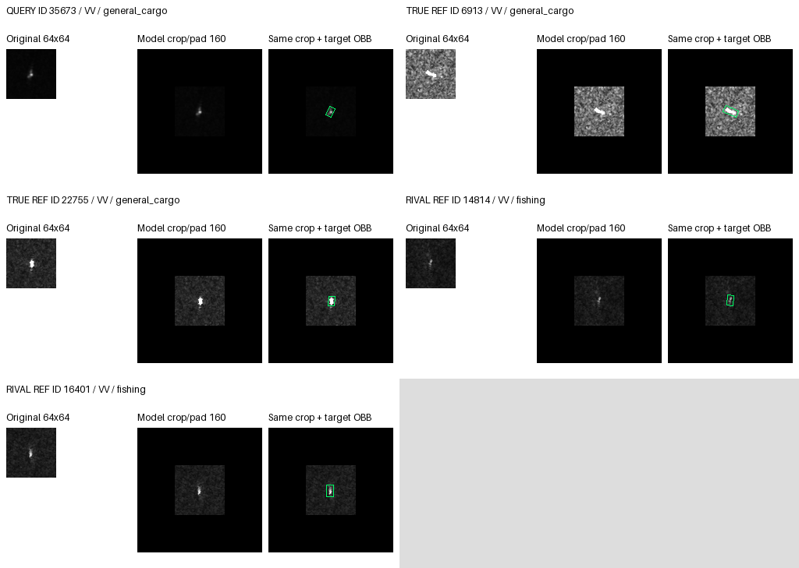
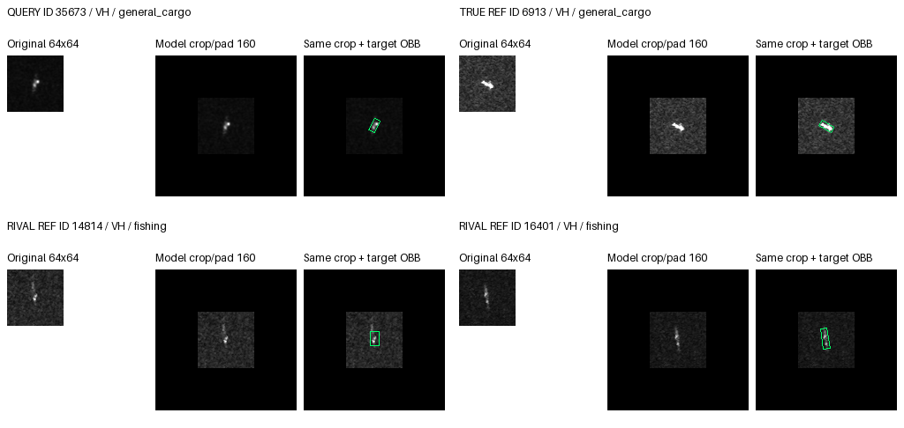
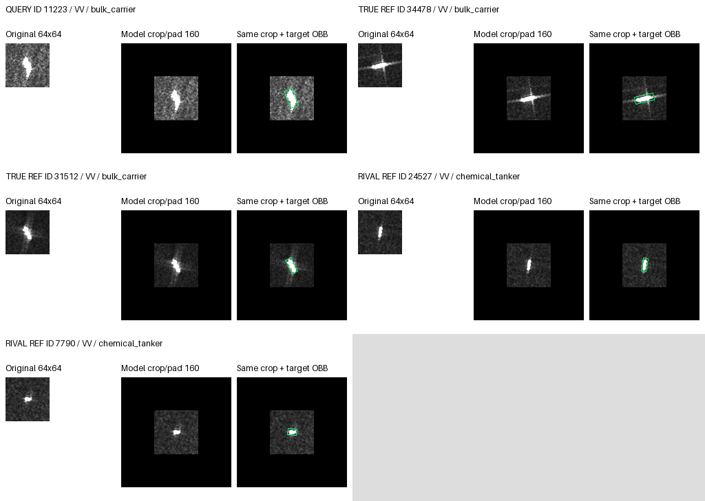
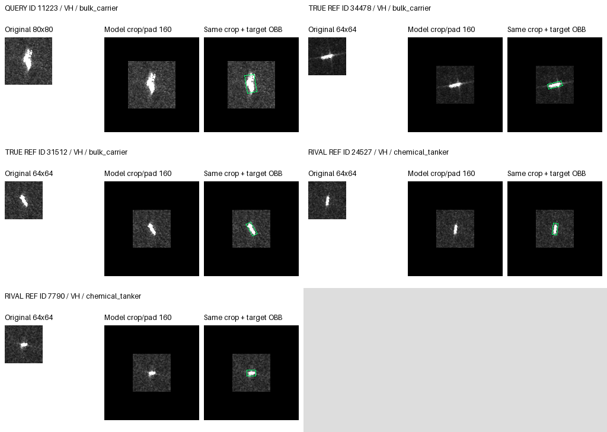

VV/VH separate; original pixels and exact crop/pad; separate OBB overlay. Rendered, not visually reviewed.
{
"arm": "aligned",
"reference": "saved_baseline",
"seeds": [
17,
29,
43
],
"absent": [],
"cases": 2,
"panels": 4,
"visual_status": "not_reviewed",
"rule": "At most two new queries/dataset: one rescue and one harm when available; exclude all previous gallery queries. Prefer outside-development, source-offset-unreproduced outcomes, then new-vs-CE, aligned-vs-pooled and margin change. Deterministic.",
"references": "Actual fixed reference manifest; exclude identical ID/MMSI; first two same/rival class entries in bank order. No resizing.",
"limitation": "Outcome-selected examples are not population proportions. Bank order is not learned attention ranking. No new per-reference attention trace or physical causal evidence."
}{
"id": "35673",
"label": 2,
"seed": 29,
"state": "rescued",
"old": 1,
"new": 2,
"changed": true,
"rival": 1,
"margin_change": 0.3945286273956299,
"arm": "aligned",
"reference": "saved_baseline",
"state_orders": 1,
"new_vs_ce": true,
"aligned_vs_pooled": false,
"ce_prediction": 1,
"pooled_prediction": 2,
"new_ce_margin_delta": 0.36779165267944336,
"aligned_pooled_margin_delta": -0.010843753814697266,
"source_offset_prediction": 1,
"source_offset_reproduces_actual": false,
"outside_development": true,
"dataset": "private",
"visual_status": "not_reviewed",
"class_name": "general_cargo",
"rival_name": "fishing",
"mmsi": "636022775",
"pass_group": "S1A_063357_07F51A",
"port": "Rotterdam",
"orders": [
{
"seed": 17,
"saved_baseline": {
"prediction": 1,
"logits": [
0.7716387510299683,
3.1428534984588623,
0.9182498455047607,
-5.336483001708984,
-4.950994491577148,
-10.69473648071289,
-2.472825288772583,
-1.7396388053894043
],
"truth_rival_margin": -2.2246036529541016
},
"ce": {
"prediction": 1,
"logits": [
-0.04988579452037811,
2.957958698272705,
0.5951700210571289,
-5.695592403411865,
-4.954653263092041,
-11.060127258300781,
-1.9795422554016113,
-0.7674238681793213
],
"truth_rival_margin": -2.362788677215576
},
"aligned": {
"prediction": 1,
"logits": [
0.8467078804969788,
3.1187126636505127,
1.0478571653366089,
-5.364477634429932,
-4.879157066345215,
-10.819328308105469,
-2.6053354740142822,
-1.646073579788208
],
"truth_rival_margin": -2.070855498313904
},
"pooled": {
"prediction": 1,
"logits": [
0.8419072031974792,
3.11798095703125,
1.0507004261016846,
-5.3641533851623535,
-4.875863552093506,
-10.828307151794434,
-2.607224702835083,
-1.6350409984588623
],
"truth_rival_margin": -2.0672805309295654
},
"state": "WW"
},
{
"seed": 29,
"saved_baseline": {
"prediction": 1,
"logits": [
1.2359752655029297,
3.7913482189178467,
3.460824728012085,
-3.1307413578033447,
-3.069478750228882,
-7.451591968536377,
-2.804356575012207,
-2.282621383666992
],
"truth_rival_margin": -0.3305234909057617
},
"ce": {
"prediction": 1,
"logits": [
0.5468467473983765,
3.5291757583618164,
3.225389242172241,
-3.7611706256866455,
-3.179224967956543,
-7.647904872894287,
-1.984017014503479,
-1.2862638235092163
],
"truth_rival_margin": -0.3037865161895752
},
"aligned": {
"prediction": 2,
"logits": [
1.2906806468963623,
3.6650161743164062,
3.7290213108062744,
-3.1144461631774902,
-3.025498390197754,
-7.50005578994751,
-2.988687753677368,
-2.2980802059173584
],
"truth_rival_margin": 0.06400513648986816
},
"pooled": {
"prediction": 2,
"logits": [
1.2868473529815674,
3.660202980041504,
3.7350518703460693,
-3.116472005844116,
-3.024324417114258,
-7.502981662750244,
-2.9893815517425537,
-2.292560338973999
],
"truth_rival_margin": 0.07484889030456543
},
"state": "rescued"
},
{
"seed": 43,
"saved_baseline": {
"prediction": 2,
"logits": [
1.414099931716919,
2.891319751739502,
3.3655004501342773,
-4.698767185211182,
-5.978166580200195,
-9.806573867797852,
-2.474644184112549,
-3.069502353668213
],
"truth_rival_margin": 0.4741806983947754
},
"ce": {
"prediction": 1,
"logits": [
0.7251155972480774,
2.9141128063201904,
2.887967348098755,
-4.793691158294678,
-5.7762770652771,
-10.155977249145508,
-2.0838637351989746,
-2.556004285812378
],
"truth_rival_margin": -0.026145458221435547
},
"aligned": {
"prediction": 2,
"logits": [
1.5539730787277222,
2.8766019344329834,
3.5458614826202393,
-4.718299865722656,
-6.063643455505371,
-9.794013977050781,
-2.640472173690796,
-3.0150868892669678
],
"truth_rival_margin": 0.6692595481872559
},
"pooled": {
"prediction": 2,
"logits": [
1.5504770278930664,
2.8758015632629395,
3.5486204624176025,
-4.715960502624512,
-6.064011096954346,
-9.796270370483398,
-2.641838788986206,
-3.007201671600342
],
"truth_rival_margin": 0.6728188991546631
},
"state": "CC"
}
],
"panels": {
"vv": {
"file": "rescued_35673_vv.png",
"same_class_candidates": 2,
"rival_candidates": 2,
"shown_reference_ids": [
"6913",
"22755",
"14814",
"16401"
],
"query_available": true,
"same_class_usable": 2,
"rival_usable": 2
},
"vh": {
"file": "rescued_35673_vh.png",
"same_class_candidates": 1,
"rival_candidates": 2,
"shown_reference_ids": [
"6913",
"14814",
"16401"
],
"query_available": true,
"same_class_usable": 1,
"rival_usable": 2
}
},
"all_legal_reference_ids": [
"34478",
"31512",
"14814",
"16401",
"6913",
"22755",
"24527",
"7790",
"36308",
"23719",
"29922",
"2077",
"12041",
"7429",
"13000",
"13276"
]
}

{
"id": "11223",
"label": 0,
"seed": 29,
"state": "harmed",
"old": 0,
"new": 3,
"changed": true,
"rival": 3,
"margin_change": -0.09102821350097656,
"arm": "aligned",
"reference": "saved_baseline",
"state_orders": 1,
"new_vs_ce": true,
"aligned_vs_pooled": true,
"ce_prediction": 0,
"pooled_prediction": 0,
"new_ce_margin_delta": -0.010801434516906738,
"aligned_pooled_margin_delta": -0.0028513669967651367,
"source_offset_prediction": 0,
"source_offset_reproduces_actual": false,
"outside_development": true,
"dataset": "private",
"visual_status": "not_reviewed",
"class_name": "bulk_carrier",
"rival_name": "chemical_tanker",
"mmsi": "356861000",
"pass_group": "S1C_005602_00B2DC",
"port": "Richards Bay",
"orders": [
{
"seed": 17,
"saved_baseline": {
"prediction": 0,
"logits": [
-1.2222373485565186,
-14.731674194335938,
-4.07253885269165,
-2.410311698913574,
-4.179189682006836,
-3.8442530632019043,
-12.448277473449707,
-15.199477195739746
],
"truth_rival_margin": 1.1880743503570557
},
"ce": {
"prediction": 0,
"logits": [
-2.042240858078003,
-14.752286911010742,
-4.719671249389648,
-2.815183639526367,
-4.472735404968262,
-3.921583414077759,
-12.131449699401855,
-14.385954856872559
],
"truth_rival_margin": 0.7729427814483643
},
"aligned": {
"prediction": 0,
"logits": [
-1.343709945678711,
-14.673486709594727,
-4.160276412963867,
-2.4031472206115723,
-4.207828521728516,
-3.8158679008483887,
-12.356209754943848,
-15.065303802490234
],
"truth_rival_margin": 1.0594372749328613
},
"pooled": {
"prediction": 0,
"logits": [
-1.341653823852539,
-14.677019119262695,
-4.161410808563232,
-2.4045472145080566,
-4.206313610076904,
-3.8148245811462402,
-12.358549118041992,
-15.067758560180664
],
"truth_rival_margin": 1.0628933906555176
},
"state": "CC"
},
{
"seed": 29,
"saved_baseline": {
"prediction": 0,
"logits": [
-1.364138126373291,
-11.422063827514648,
-3.246643543243408,
-1.454488754272461,
-2.7319042682647705,
-1.6687802076339722,
-10.474331855773926,
-14.30763053894043
],
"truth_rival_margin": 0.09035062789916992
},
"ce": {
"prediction": 0,
"logits": [
-1.9412400722503662,
-11.628313064575195,
-3.7500686645507812,
-1.9513639211654663,
-3.041762351989746,
-2.001385450363159,
-9.706440925598145,
-13.169614791870117
],
"truth_rival_margin": 0.010123848915100098
},
"aligned": {
"prediction": 3,
"logits": [
-1.465748906135559,
-11.332736015319824,
-3.36777925491333,
-1.4650713205337524,
-2.725399971008301,
-1.6792930364608765,
-10.305779457092285,
-14.145995140075684
],
"truth_rival_margin": -0.0006775856018066406
},
"pooled": {
"prediction": 0,
"logits": [
-1.4645062685012817,
-11.337532043457031,
-3.366945266723633,
-1.4666800498962402,
-2.725227117538452,
-1.677927851676941,
-10.312042236328125,
-14.149991035461426
],
"truth_rival_margin": 0.002173781394958496
},
"state": "harmed"
},
{
"seed": 43,
"saved_baseline": {
"prediction": 5,
"logits": [
-2.5891928672790527,
-14.154945373535156,
-4.042105674743652,
-3.8048441410064697,
-5.310362339019775,
-1.3318144083023071,
-12.094315528869629,
-13.873489379882812
],
"truth_rival_margin": 1.215651273727417
},
"ce": {
"prediction": 5,
"logits": [
-3.3408329486846924,
-14.192561149597168,
-4.694950103759766,
-3.882053852081299,
-5.209963321685791,
-1.7303104400634766,
-11.685189247131348,
-13.306570053100586
],
"truth_rival_margin": 0.5412209033966064
},
"aligned": {
"prediction": 5,
"logits": [
-2.778642177581787,
-14.127699851989746,
-4.194797992706299,
-3.781353712081909,
-5.218946933746338,
-1.390733242034912,
-11.965167999267578,
-13.817808151245117
],
"truth_rival_margin": 1.002711534500122
},
"pooled": {
"prediction": 5,
"logits": [
-2.7765839099884033,
-14.128385543823242,
-4.193474769592285,
-3.7835330963134766,
-5.218764305114746,
-1.3894706964492798,
-11.966785430908203,
-13.8169527053833
],
"truth_rival_margin": 1.0069491863250732
},
"state": "WW"
}
],
"panels": {
"vv": {
"file": "harmed_11223_vv.png",
"same_class_candidates": 2,
"rival_candidates": 2,
"shown_reference_ids": [
"34478",
"31512",
"24527",
"7790"
],
"query_available": true,
"same_class_usable": 2,
"rival_usable": 2
},
"vh": {
"file": "harmed_11223_vh.png",
"same_class_candidates": 2,
"rival_candidates": 2,
"shown_reference_ids": [
"34478",
"31512",
"24527",
"7790"
],
"query_available": true,
"same_class_usable": 2,
"rival_usable": 2
}
},
"all_legal_reference_ids": [
"34478",
"31512",
"14814",
"16401",
"6913",
"22755",
"24527",
"7790",
"36308",
"23719",
"29922",
"2077",
"12041",
"7429",
"13000",
"13276"
]
}
